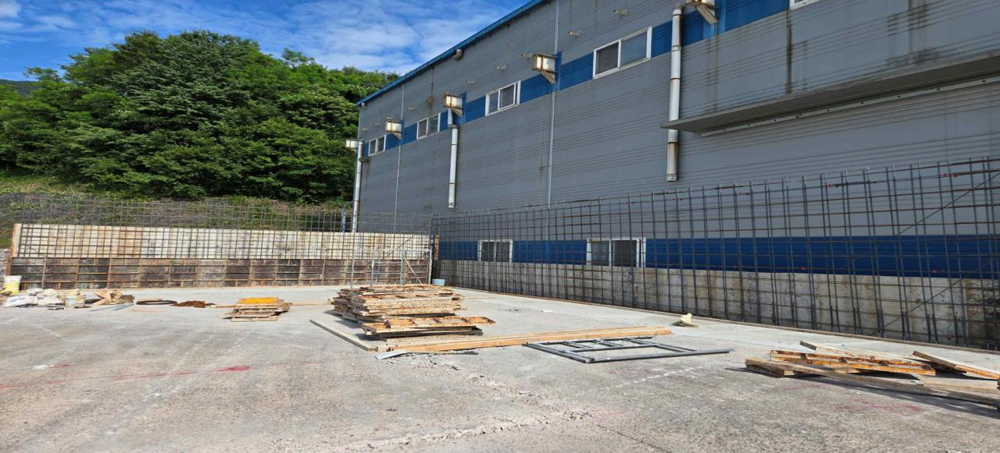
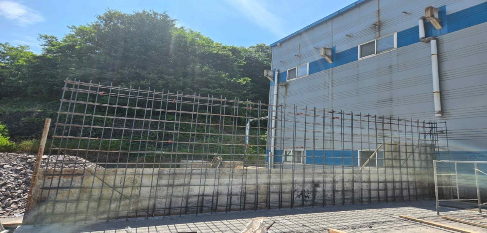
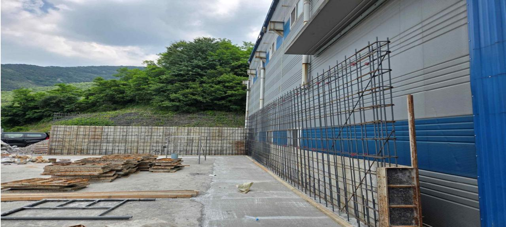

작업 범위
외부 옹벽 벽체 구간을 A면과 B면 2개 작업면으로 구분해 진행했습니다.
외부 옹벽 벽체의 A면·B면 작업면을 기준으로 거푸집 및 철근배근 상태를 확인한 현장 리뷰 문서입니다.
옹벽 거푸집·철근배근 점검, 타설 전 검측 준비 단계

공사일보를 리뷰 문맥으로 바꿔, 현장 상태를 빠르게 판단할 수 있도록 핵심만 먼저 제시합니다.
외부 옹벽 벽체 구간을 A면과 B면 2개 작업면으로 구분해 진행했습니다.
벽체 타설 전 단계로, 거푸집 설치와 철근배근 형상을 확인하는 시점입니다.
2026-06-16 촬영 사진 3장을 연결해 면별 확인 근거를 확보했습니다.
사진별 역할, 현장 확인 사항, 리더가 바로 읽을 수 있는 짧은 판단 문장을 함께 배치했습니다.



발주/검토 → 현장조망 → A면 확인 → B면 확인 → 타설전 검측
↘ 사진증빙 ↗
리뷰정리
현장관리 → 작업지시 → 거푸집팀
↘ 검측 ↗ ↘ 철근팀
품질확인 → 타설준비
원문 메모를 보고서형 문장으로 재구성해, 리딩 시점에서 바로 판단할 수 있게 정리했습니다.
외부 옹벽 벽체 구간은 A면과 B면으로 나뉘어 거푸집 설치와 철근 배근이 진행되었습니다.
| 사진 | 구분 | 현장 확인 초점 | 판단 메모 |
|---|---|---|---|
| P01 전체 조망 | A-B면 | 전체 범위, 벽체 구간, 철근망·거푸집 설치 범위 | 면별 비교를 위한 기준 사진으로 적합 |
| P02 세부 | A면 | 하부 접합부, 배면 사면 인접부, 철근망 상태 | 타설 전 밀도 점검에 유리 |
| P03 세부 | B면 | 연속 철근망, 단부 거푸집, 자재 적치 및 동선 | 작업 간섭과 정리 상태 확인에 유효 |
허가, 자금/보증, 착수, 옹벽, 게이트/펜스, 확장 공정의 순서를 한 눈에 보는 HTML/CSS 간트입니다.
이번 일지는 단순 사진 첨부가 아니라, 타설 직전 품질 점검의 기준점을 만드는 문서로 해석됩니다.
타설 전 핵심 리스크를 미리 명시해, 검측과 보강의 판단 기준을 분명히 합니다.
면별 사진과 메모가 연결돼 있어 현장팀, 검측자, 보고 대상 간 설명 비용이 줄어듭니다.
날짜와 사진 연결이 명확해 추후 품질 검토나 분쟁 대응에도 활용도가 높습니다.
섹션별 검토 질문, 열린 이슈, 읽는 사람 메모, 그리고 AI 전달용 피드백 복사까지 마지막 단계로 이어집니다.
아래 메모를 적고 복사하면 다음 수정 요청을 바로 이어갈 수 있습니다.
원문의 핵심 표현은 보존하되, 노출형 마크다운과 오브시디언 전용 표시는 모두 독자 친화적인 문장으로 전환했습니다.
2026년 6월 16일 지수통합선별공장 현장은 외부 옹벽 벽체 구간의 거푸집 설치 및 철근 배근 작업을 진행하였다. 실제 작업면은 A면과 B면 2개 면으로 구분하며, P01은 A-B면 전체 조망, P02는 A면, P03은 B면 세부 확인 사진으로 정리한다. 후속 공정 전 철근 피복, 거푸집 수직도, 결속상태, 타설 전 청소 상태를 최종 점검할 필요가 있다.
draft-collecting 단계의 초안이며, 사진 연결과 현장 설명은 완료되었습니다.
작성 09:59, 수정 10:36, 사진 업데이트 10:50 기준으로 정리했습니다.
Leave a public GitHub comment or reaction below.